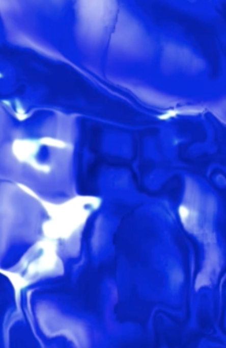
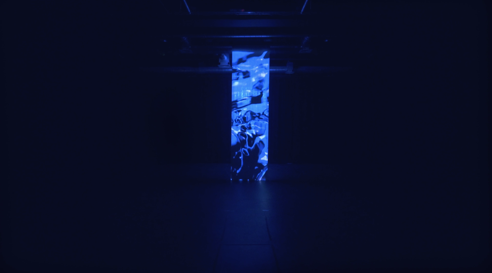
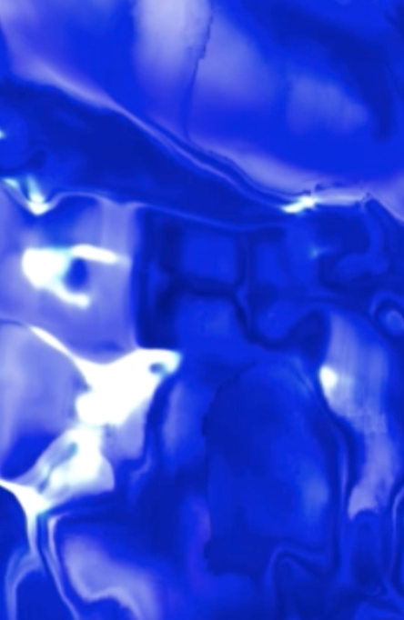
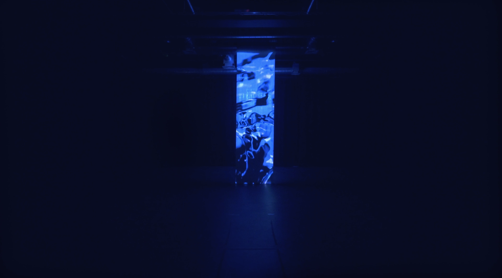

HERMA
Our sense of selves is in constant motion. Never fixed, or bounded by time, we ‘perform’ for a moment. In Liquid Time, gender flows through - rather than occupies - time and space. Its inherent uncertainty, discontinuity, and plurality make gender a fluid concept. There is not one true representation of gender, but rather, a set of fragmented perspectives — that ultimately, fail to build a unified picture.
HERMA is an interactive installation that re-imagines gender using light, sound, and scent. Through abstraction, the multi-sensory experience strives to de-construct the normative idea of gender representations and expectations. Gender expressions extend beyond the categorical conventions of masculinity, femininity, and androgyny. By creating unexpected encounters with perpetually moving textures and forms, HERMA explores gender’s ambiguous and shape-shifting nature.
As viewers experience the installation, camera recognition calculates the number of people present and changes the flow of the visual in accordance. The uncontrollable, subtle, and perpetual change in pace reflects gender’s transitory nature. HERMA hopes to offer a contemplative and disorientating experience, revealing gender’s shapeless essence.
As gendered self-consciousness constantly fluctuates, how can we unleash ourselves from the rigidity of such a socially constructed concept?
www.herma.space London, 2019 — Video projection on latex, 1x4 meters 


